For some air before the storm we drove down to Emeryville Marina. Pictures taken with a Fuji X100F using its Acros film simulation (and, for one, a small flash). Some cropping and boosting of contrast, no other manipulation.
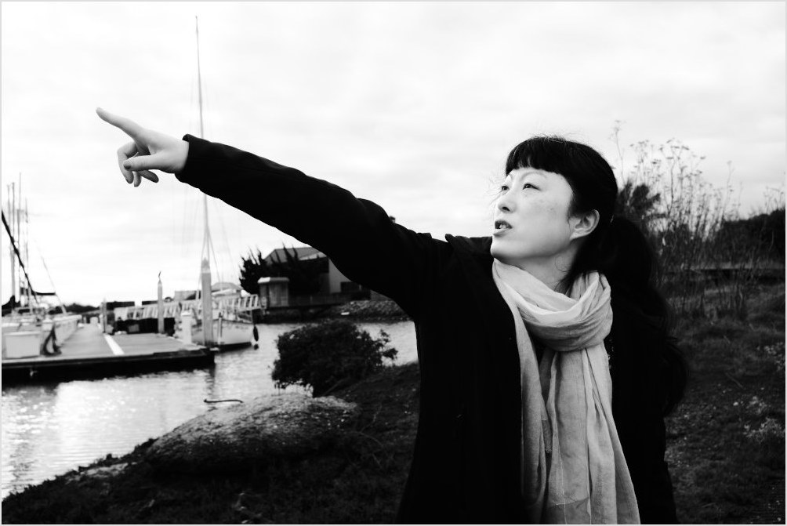
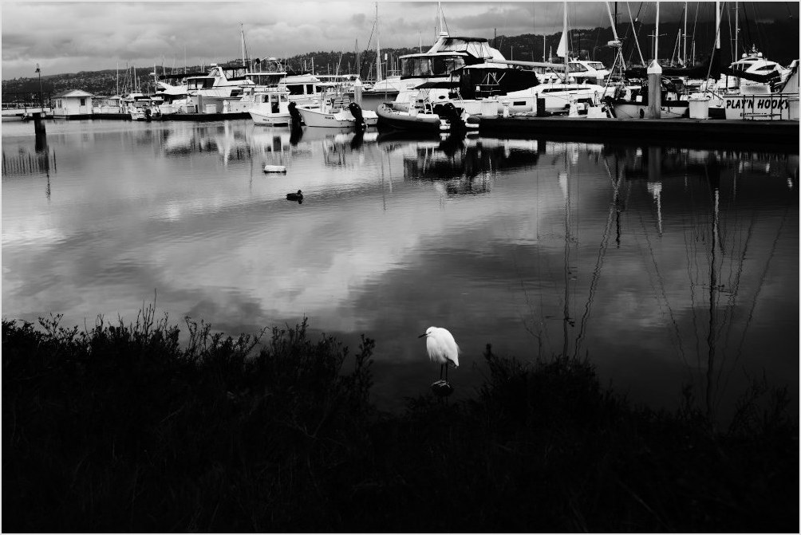 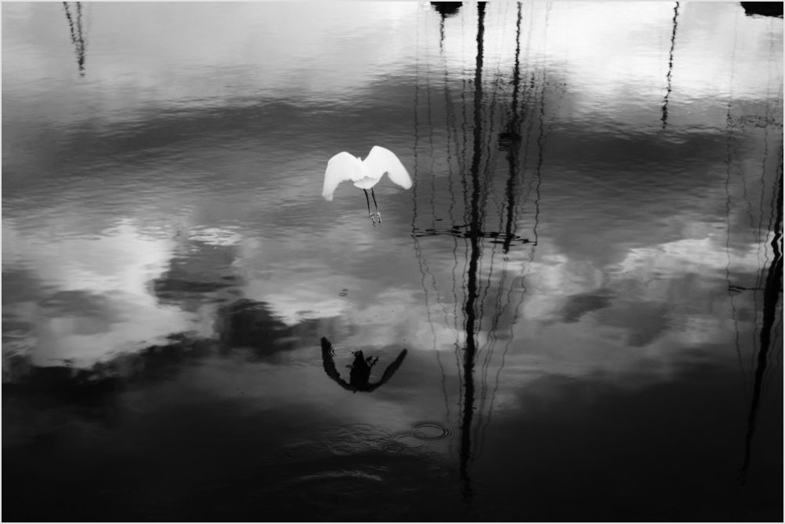
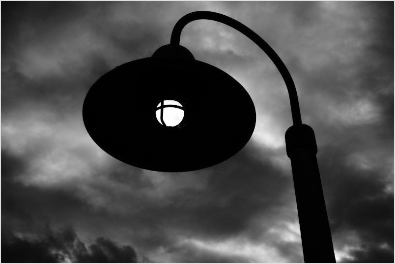 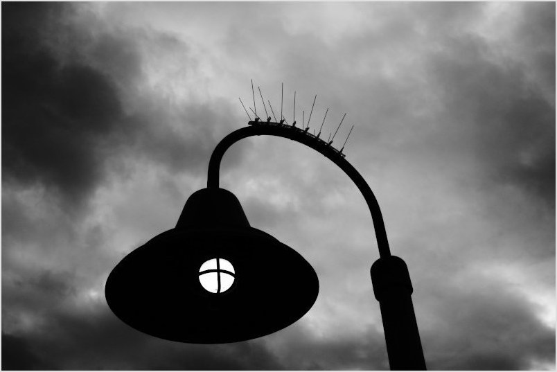
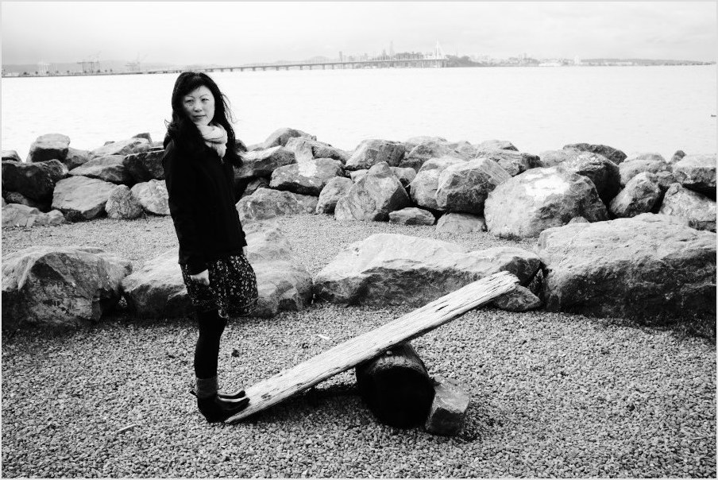
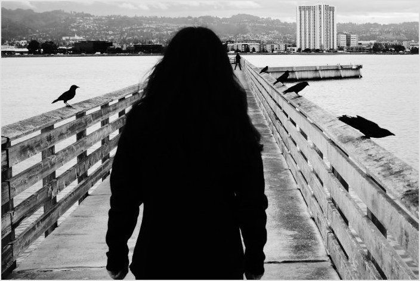 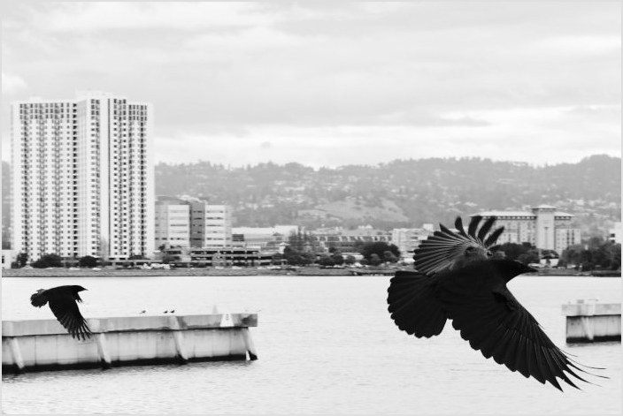
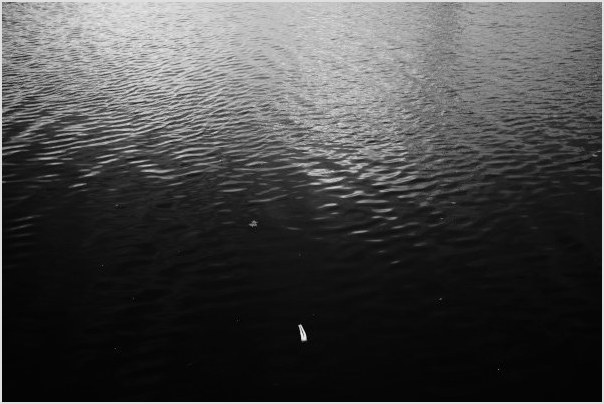 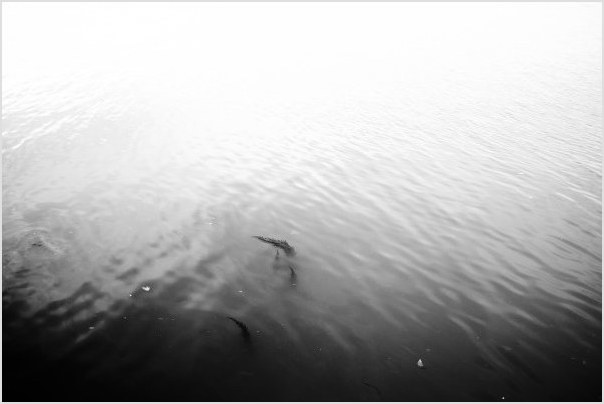
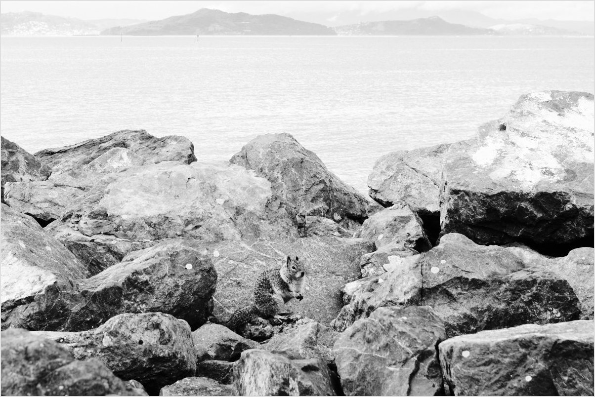

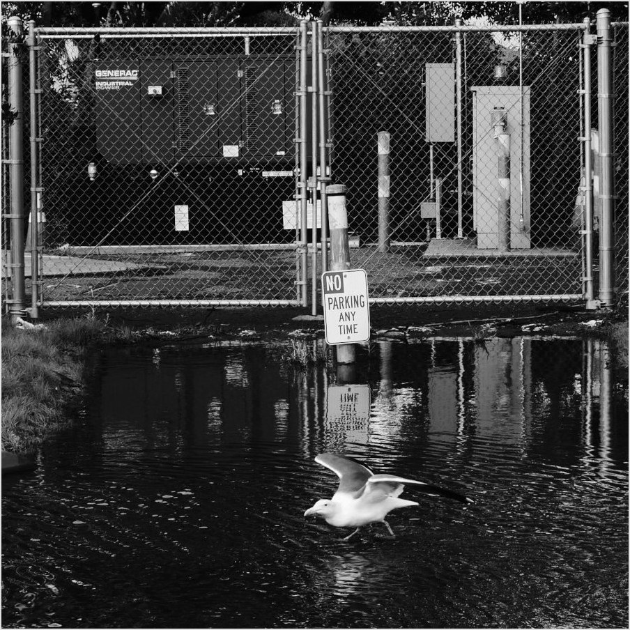
All images (c) Will Harwood 2025.